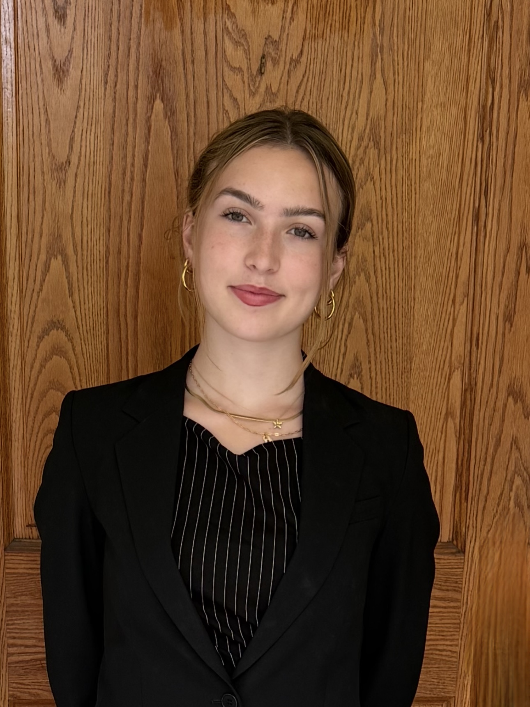

Gabby Ouellette
I'm a third-year Electrical Engineering student at Dalhousie University, working toward a Biomedical Engineering Certificate. I'm passionate about building a more accessible, equitable, and innovative world, whether through design or leadership.

IMG_2347.JPG
Academic experience
Research, lab and academic experiences that have shaped my interests in biomedical engineering, artificial intelligence and medical technology.
Bioprinting Technician · Frampton Lab
Halifax, NS
Created easy-to-read guides for each printer and documented the weekly condition and cleaning of laboratory printers.
Combat Robotics · Dalhousie University
Halifax, NS
Designed and developed a motor and battery monitoring system for a competitive combat robot, including CAD design, motor testing and electrical system considerations.
Artificial Intelligence Research · Lignum
Vancouver, BC
Researched artificial intelligence applications for use in a business office and manually organized client data.
Capstone Project · Fraser Academy
Vancouver, BC
Fundraised over $1,000 for Vancouver Eastside Women's Centre by leading groups and planning events including Wear Purple Shirt Day and other fundraisers. Personally delivered the funds to the centre.
Projects
A selection of engineering, biomedical, robotics and AI projects I've worked on.
Tetra Society Devices
Designing customized medical and assistive devices for people in the physical disability community.
View project → Medical EngineeringSt. Paul's Hospital Medical Models
Helped replicate wooden medical training models used to simulate anterior repair, posterior repair and vaginal hysterectomy.
View project → AI · Medical ImagingBreast Cancer Imaging Verification
Created and trained an AI-based ultrasound verification tool and built a public-facing website for the National Canadian Medical Datathon.
View project → Robotics · C++ · CADMedically Assistive Robotic Arm
Coded the arm's logic in C++, designed the PCB and arm in CAD, and presented the project to the class.
View project → Robotics · CADCombat Robotics Motor Monitor
A custom motor test setup designed around the requirements of a competing combat robot.
View project → Biomedical EngineeringBioprinting Lab Work
Hands-on experience maintaining bioprinters and creating clear documentation for biomedical research equipment.
View project →Leadership
President · Tetra Society of North America
Lead executive and general meetings, coordinate client plans, and help teams develop devices for people with physical disabilities.
Director of Junior Design & Communication · Dalhousie's Engineering Competition
Design and present a competition case for first- and second-year engineering students while helping market the competition.
VP Communications · Diploma of Engineering Society
Communicated upcoming events, created social media content, and helped organize major engineering events.
Head of Student Council · Fraser Academy
Led school-wide events and fundraisers, managed budgets, allocated resources and coordinated volunteers.
Technical skills
A mix of programming, CAD, lab and communication skills developed through coursework, projects and work experience.
Let's get connected!
I'm always interested in meeting people working in biomedical engineering, assistive technology, robotics and hands-on product design.